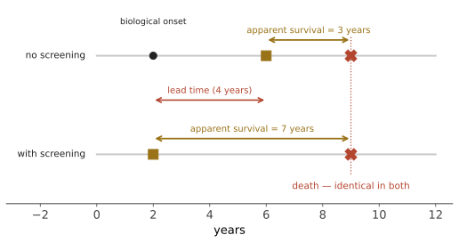

本页目录
诊断 III · 筛查悖论与过度诊断
"早发现早治疗"是医学中最被广泛接受、也最经常被误用的一句话。它有时对，有时无效，有时有害——而区分这三种情况需要一组专门的工具。本页给出这组工具，它们也是全站最容易迁移到其他预测领域的部分。
1. 筛查与诊断性检查的根本区别
诊断性检查用于有症状的人（验前概率高）；筛查用于无症状的人（验前概率 = 人群患病率，通常很低）。
由第 02 页的算术，低患病率必然导致低 PPV。但筛查还有一个更深的问题：它改变的不只是"何时发现"，还改变了"发现哪些"。
2. 三个偏倚：为什么筛查看起来总是有效
这三个偏倚会让一个完全无效的筛查看起来极其成功。必须能立刻辨认。

① 领先时间偏倚（lead-time bias）：提前诊断使"确诊到死亡"的时间变长，而死亡时间不变。→ 所以"5 年生存率"不能用来评价筛查。
② 长度偏倚（length bias）：筛查是间歇进行的，因此更容易抓到进展缓慢、临床前期长的肿瘤；进展快的肿瘤常在两次筛查之间出现症状（间期癌）。结果：筛查发现的癌症天然预后更好，即使筛查本身毫无作用。
③ 过度诊断（overdiagnosis）：长度偏倚的极端——检出了永远不会引起症状或死亡的病变。这些人被诊断为"癌症患者"、接受治疗、并 100% "存活"，从而进一步抬高筛查组的生存率。
三者叠加的后果：筛查几乎总能提高生存率与提前分期，却未必降低死亡率。
3. 过度诊断的两个自然实验
这不是理论推测，有两个被广泛引用的实证案例：
① 韩国甲状腺癌：2000 年前后甲状腺超声筛查大范围推广，甲状腺癌发病率上升约十五倍，绝大多数接受了手术（多数终身服用甲状腺激素替代，部分出现甲状旁腺功能减退或喉返神经损伤）。同期甲状腺癌死亡率几乎持平。——发病率暴涨、死亡率不动，这是过度诊断的定义性签名。
② 神经母细胞瘤筛查：日本曾对婴儿普遍筛查，检出率大幅上升，但死亡率未下降；德国与加拿大的对照研究证实同样结论，该筛查随后被停止。
尸检研究提供了更直接的证据：因其他原因死亡者的尸检中，相当比例存在未被诊断的甲状腺乳头状癌、前列腺癌与乳腺导管原位癌。"癌症"这个词涵盖了一个从惰性到致命的巨大谱系，而我们的检测手段无法可靠区分。
4. 评价筛查的正确方法
唯一可靠的设计是随机对照试验，且终点必须是死亡率：
| 终点 | 是否可靠 | 原因 |
|---|---|---|
| 5 年生存率 | 不可靠 | 领先时间 + 长度偏倚 + 过度诊断 |
| 分期分布前移 | 不可靠 | 同上 |
| 检出率提高 | 不可靠 | 可能全是过度诊断 |
| 该病死亡率（人群基数） | 可靠 | 不受三偏倚影响 |
| 全因死亡率 | 最严格 | 但通常统计功效不足 |
为什么全因死亡率几乎从不显著：某癌症占全因死亡的比例很小，即使筛查把它减半，在总死亡上的信号也会被淹没——需要极大样本。所以"筛查未降低全因死亡率"通常不是反对筛查的有力论据，但"筛查未降低该病死亡率"是。这个区分很重要，两边都常被误用。
5. 完整的收益-危害账
筛查的危害是真实的、可量化的、且发生在健康人身上——这是它与治疗最大的伦理差别。
| 危害 | 说明 |
|---|---|
| 假阳性 | 焦虑、进一步检查（活检、CT 辐射）、并发症 |
| 过度诊断与过度治疗 | 手术、放疗、化疗、终身用药、保险与就业影响 |
| 假阴性的错误安心 | 延误有症状者的就诊 |
| 间期癌 | 筛查阴性后短期内出现，最难被公众理解 |
| 偶发瘤（incidentaloma） | 影像筛查的副产品，触发新的检查瀑布 |
| 成本与机会成本 | 第 23 页 |
因此评价筛查要用一组数字，而不是一个：
- NNS（需筛查人数）：为避免 1 例该病死亡需筛查多少人、筛多少年；
- 每避免 1 例死亡对应的假阳性数、活检数、过度诊断数。
这组数字应当同时呈现——只报 NNS 是不完整的，只报危害也是。第 17 页对各癌种给出完整对照表。
6. Wilson–Jungner 标准（1968，至今有效）
一个筛查项目值得做，需要满足：疾病是重要健康问题；有可识别的早期阶段；早期治疗优于晚期治疗（这一条最常不满足）；有合适的检验；检验可接受；自然史已被充分理解；对谁算病例有共识；有治疗设施；成本可接受；筛查是持续过程而非一次性。
"早期治疗优于晚期"这条为什么常不满足：对某些癌症，转移在原发灶极小时就已发生（生物学决定论），发现早晚不改变结局；对另一些，病变根本不会进展（过度诊断）。只有"进展速度中等、且早期干预有效"的那一段疾病谱能从筛查获益——这个窗口比直觉中窄得多。
7. 迁移：这一页在医学之外的用法
过度诊断的结构 = 在一个混杂着"会发生"与"永不发生"的池子里做早期检测。这个结构在别处也成立：
- 预测系统中的"提前预警"：如果一个信号提前捕捉到的多半是那些本来也不会造成损失的事件，那么"命中率高"就是虚假的；
- 评价指标的选择：用"从预警到事件的时间"作为绩效指标，与用 5 年生存率评价筛查犯同一个错——它奖励更早的预警，而不奖励更准的预警；
- 唯一可靠的评价是随机化 + 人群级硬终点。
🔗 这与你预测层的"命中逻辑池要区分运气与洞察"、"forward-only 硬约束"是同一件事的两个说法：必须在事件发生前锁定判据，且用不受观测方式影响的终点结算。
8. 本页的操作性结论
面对任何"早发现"主张，问四个问题：
- 有没有以死亡率为终点的 RCT？ 没有的话，生存率数字不可采信；
- 发病率上升了但死亡率没动吗？ 若是，怀疑过度诊断；
- 危害的完整清单是什么？ 假阳性数、活检数、过度治疗数；
- 这个人群的患病率是多少？ 回到第 02 页的 PPV 算术。
下一页：从数学转向心理——即使掌握了以上全部工具，人的推理仍会以可预测的方式出错。